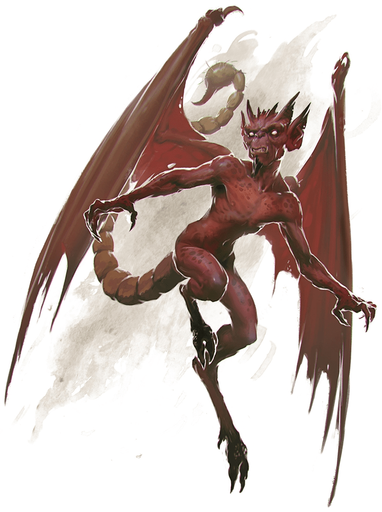

Resumen
Título: "Mascota" de Polly
Afiliación: Self
Lugar de Origen o donde fué conocido: Orzav (Ciudad Calavera)
Edad: ???
Raza: Imp
Clase: N/A
Tamaño: Tiny
Apariencia
Imp rojo y pequeño, con carácter fuerte, y le gusta mucho la miel.
Kuya
Cithrel encontró a Kuya después de pelear con Polly mientras looteaban su huarida. Cithrel rompió una caja que decía en infermal
La miel más deliciosa del mundo
y de ahí salió Kuya, enojado y listo para atacar a Cithrel. Cithrel logró intimidar a Kuya y después logró que lo acompañara mientras le buscaba otra casa. De esto salio una semi-amistad entre Cithrel y Kuya.